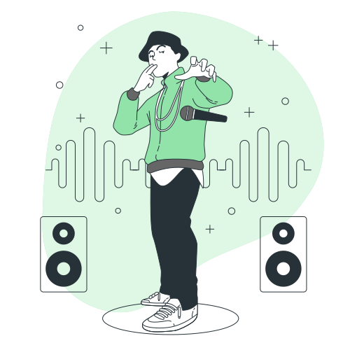

Music
My interest in music doesn't involve in the artistic process of creating one, but rather more into my niche, or in other words, my genre. They are Jazz, Hip-Hop, Pop, and R&B.
My go-to music streaming service used to be Spotify, but due to many controversial decisions the platform made, I decided to head over to YouTube Music, where it seems to provide me with a better experience in listening to music. Which are having a user-personalized auto-play with the option being different types of genre, ability to switch from audio mode to music-video mode where it can be useful as an ambient display screen, and a tab of similar vibe songs according to the one that is currently being listened to.
Throughout 2024, my most listened artist is Billie Eilish, according to my YouTube Music 2024 RECAP. It's most likely due to the recent album she released, HIT ME HARD AND SOFT,
which is not only in line with my genre of music, but also the fact that Billie herself just has a really good singing voice.
